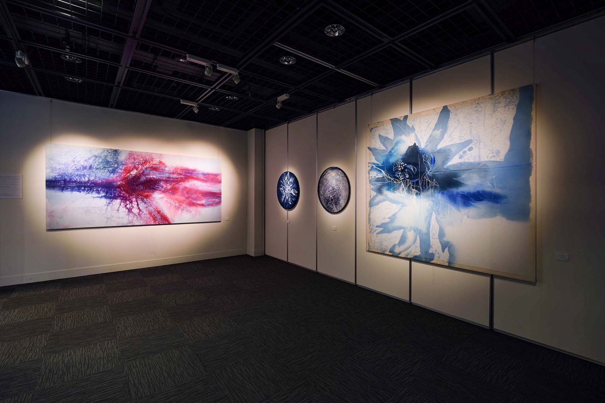
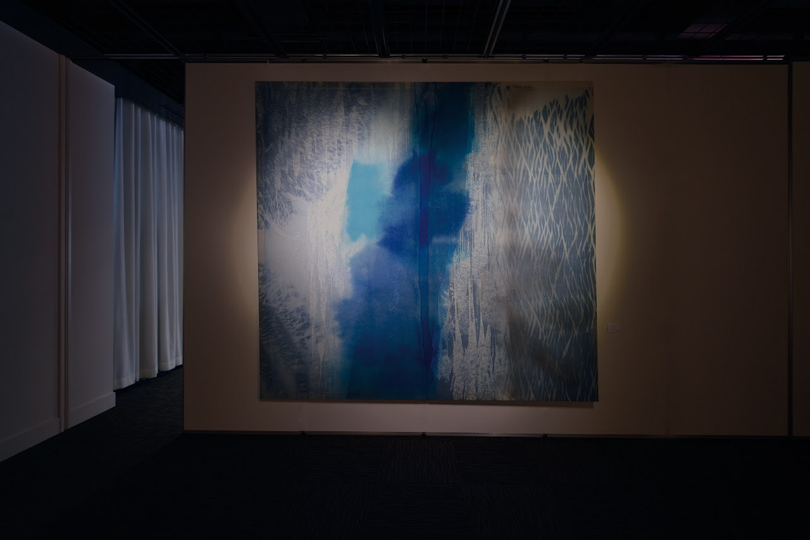
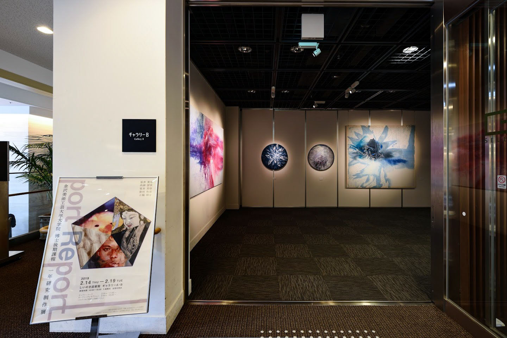

I W A I M i k a
w o r k s
p o r t f o l i o
I n s t a g r a m _ w o r k s
I n s t a g r a m _ d r a w i n g s
金沢美術工芸大学 平成30年度 博士後期課程1年 研究制作展「port Report」
期間
2019年2月14日 → 2019年2月19日
会場
しいのき迎賓館 ギャラリーA、B
形式
グループ展
主催 金沢美術工芸大学
共催 石川県政記念しいのき迎賓館
出品作家
岩井 美佳 Mika Iwai 染織分野
内田 望美 Nozomi Uchida 油画分野
坂本 英駿 Hidetoshi Sakamoto 日本画分野
新村 和泉 Izumi Shimmura 染織分野
三輪 瑛士 Eiji Miwa 油画分野
G a l l e r y



E x h i b i t e d W o r k s
やわらかな瘡蓋 03
時を聴く
A piece of Days 01
← b a c k